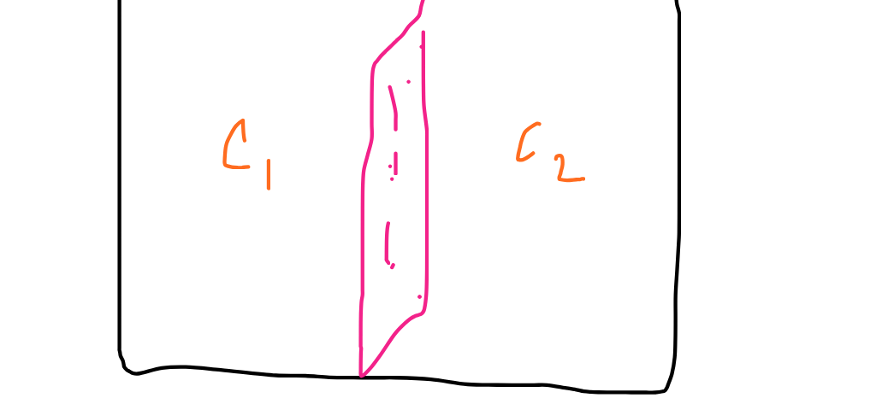
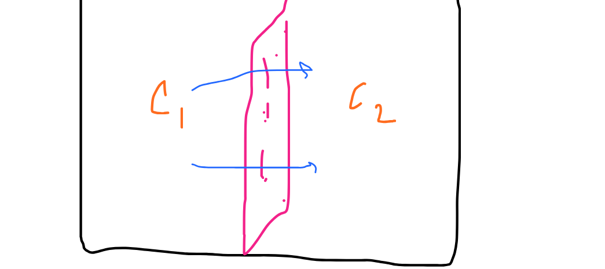
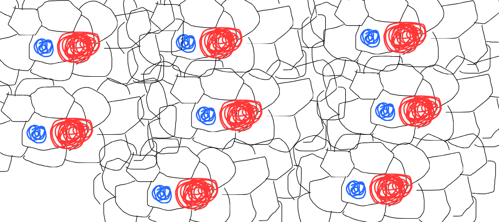
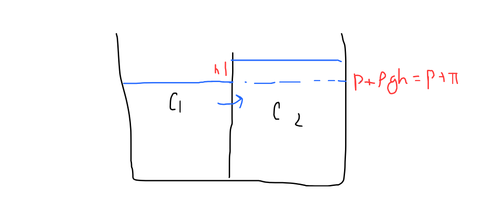
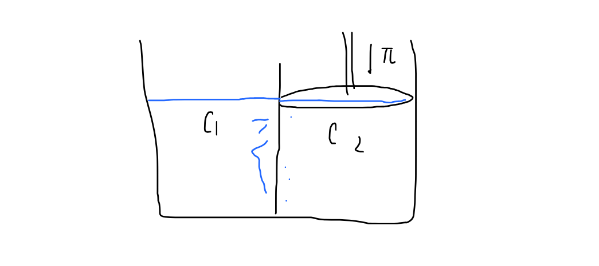
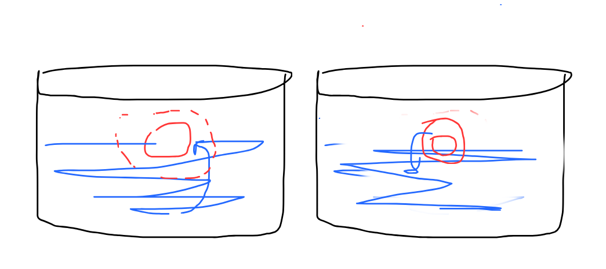

OSMOSIS
What is osmosis????

Usually what people think of osmosis is very weird idea, they think of something going out and flowing but thats half of what is actually happening and why you should know what is OSMOSIS.
Osmosis
Its a fact or you could just say a good observation that things tend to go from High potential to low potential or From high to Low right Now imagine two containers with liquide C1 and C2 , and imagine a special wall which i would tell you latr what it is But now for it just imagine these two walls.

Now imagine C1 solution has more water than C2 solution, so if if and only if we make the wall to allow water molecules to pass, they would go from C1 to C2, right? cause from more water to low water and then, it would flow until it has reached equilibrium. But now then you think, Does only water flows out of the membrane of does everything with minerals and solute flows?
Membranes
So there are two types of membrane we are gonna look for now
Perimable membrane
These are the membranes which allow the molecules to pass even the solute and the solvent molecules to pass from itselfs,
As you can see the molecules of solvent(blue) and solute(orange) are both able to pass fluently but the thing is that, yup they are passing normally, so the solution would flow from C1 to C2 until their concentration as a whole becomes in equilibrium So this phenomena is called diffusion
But what about semiiiii Permiableee membrane?
SO yeah semi perimable membrane can be something like which only abllow the solvent to pass and go thorugh them , cuase the solvent is big enought to not pass from them so yeah, if the solvent (in the medium which it is dissolved only passes) then we say is as osmosis.

So as we can see here the membrane is big enough to only let the solvent pass :D
Concept of osmosis
Now lets talk about osmosis
Osmosis is just the phenomna where the solvent only passes and gets exchange Now I have a question, let concentation be defined as [moles of solute/volume of solution], then If the solution C2 has higher concentration than C1 then where do you thinkg the interchange of solvent would occur?
Its the same, cause since the concentration of C2 is greater than C1 then it means that The moles of solute are gretaer in C2 than of C1 so complentatry moles of solvent would be greater in C1 than of C2, hence the flow of solvent from high to low, then from C1 to C2
So the higher the concentration of solute the less the concentration of the solvent
Osmotic pressure
This an important term to study
This means the excess pressure built due to the flow of solvent from one low concetration to high concentration liquides, this is usually dentoed as pi
Imagine this, from C1 to C2 the liquid is flowing (the solvent)

Since due to osmosis some solvent flwe from C1 to C2 solution, then due to that extra pressure is generated where P is the earlier pressure, than that extra pressure of pi is the osmotic pressure.
What is Reverse osmosis and another definition of osmotic pressure :D
So we can define osmotic pressure as the amount of pressue we should apply at the reciver side so the osmosis doesn't occur, it means like to stop it :D

Now here the pressure applied pi is the osmotic pressure but what if we say that if we apply pressure grater than pi, then yup your intuion is right, the thing would go in reverse from Low to high solvent yup, from hight to low conceptration of solute :D1 this is also known as reverse osmosis
Yup thats how your RO in your house which serves as a water fiter works you know :DDDDD
So in RO, what it does, like there is a filter which has pure water and then due to that the tap water is run, and then huge pressure is applied to it so the water flows from tap section to the pure water making it a reverse osmosis and purifiying our water So yeah, but why its called reverse osmosis, becuase you know its actually reverse`
Since, the water if it have would been in normal condition, it flows from low concetration of solute to high concentration means pure water should have flows to the tap but since we are applying pressure on tap, through semi permiable membrane, the water from tap water flows to the pure water making it clean :D So now you could tell your parents that how this workds LD
Now again lets come one why we were asking for the blood?? right?
So what happenes usually is that when a patient is in coma, he has to like get water though it nerves, but that glucose is of some special concentration or that saline water (which is fed to the patient) is of soemting speial concetration thats why they charge you for it, and aslo like why its of special concetraition??
Now Hypo and Hyper solution and their effects on cells.
Since we are focusing on hyper and hypo solutions, we should first know about Isotonic solutions, Isotonic Solutions are those solutions, which have same osmotic pressure at same temperature. \( \pi1 = C1*R*T = \pi2 = C2*R*T\) is \(C1 = C2\) at same temperature then it is known as Isotonic solutions The solution that we use for water for Coma patient is And isotonic solution with RBC with is a 0.85% (w/v) NaCl Solution.
What about When we keep a RBC cells in a container imagine the container soltuion haveing more concentration, then the solute quanitty is more in the outside solution rather than the RBC, hence the solvent flows from where it is more from high to low, like from The RBC it would flow to the solution, hence making the RBC shrink.
What about when we keep a RBC cells in a conatiner , where the solute concentraiton in the solution in the continer is low than of the solute concnetration in RBC, hence, the solvent goes from the solution to the RBC making it swell
Hence what we say that if we don't keep an isotonic soltuion our cells would swell up and burst or shrink up and dies

As you can see in the image that in the first image we could see the swelling of the cell, ecuase the cell concetration(of solute) was higher than of the liquid it was contained in, But in the second image, as you can see, the rbc loses water becuase the solution concentraion (of the solute was high) in the liquid rather than the RBC making it shrink